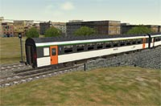
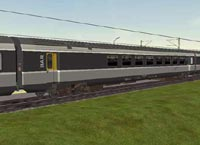
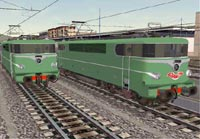
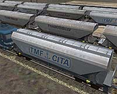

Add-ons pour 
Voici les Add-ons pour Microsoft Train Simulator que je vous propose:
|
|
Voitures Corail SNCF v0.31 |
696 ko
|
|  |
Voiture Corail A5B5tu VTU 84
Voiture mixte à portes louvoyantes |
52 ko |
|  |
Voiture Corail B5rtux Corail+
Voiture "Bar Corail" |
56 ko
(Complément du pack v0.31) |
|  |
BB 9200 et BB 16000 1957/65 BB 16004, en version d'origine |
v0.2 : 8,5 Mo
|
|  |
Trémies céréalières à
faces planes Uagps Fauvet Girel 94m3 |
1,16 Mo
|